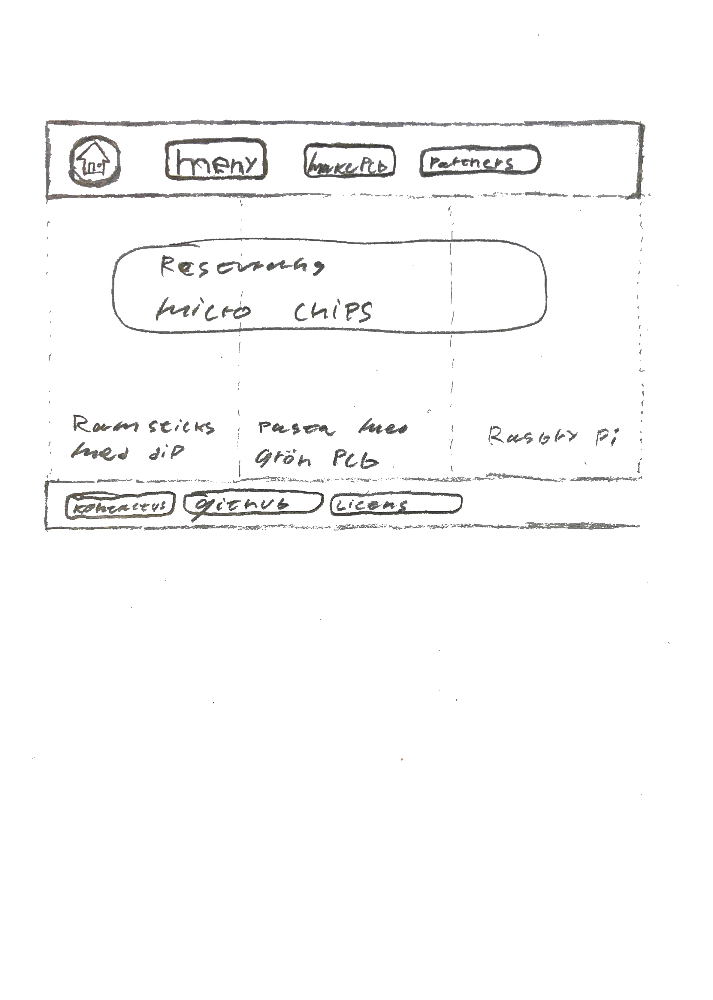
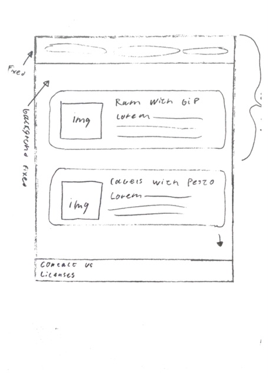

Dokumentation projekt Vt
1. Idébeskrivning
Min Idé, Resturang Micro Crisps,jag har dålig humor.
Restureangen serverar, RAM stickor med dip, kablar pasta med grön PCB pesto, och som effträt serveras rasberry pi, ska expandera menyn senare
du ska även kunna beställa spcal gjodra chips, med Restureangen partner, "PCB way", så det måste finnas en sida för det
2. Planering
Logo
meny
en bra index sida, med auto play inbedad video?
en sida för menyn
en sida med information om vad som händer när du beställer din egna PCB
en sida med alla licenser och copyrights
2.1 Handskiss


2.2 Schema
arbetar på index, tills den är klar, tar då hedern och fottern från den till menu och costum pcb
| Vecka | På lektionen | Utanför lektionen |
| 47 |
skriver dokumentation och arbetar med ide generering
|
gjorde ett blender project för en backgrundsbild
|
| 48 |
har codat html för mainpage
|
|
| 49 |
jag har stylat första sidan lite mera samt så har jag skapat de andra sidornas dokument,
|
gjort skissar för menu och custom pcb, samt har stylat mainpage
|
| 50 |
|
|
3. Dokumentation
Lektion vecka 47
Lektion vecka 48
jag har codat i index.html och css/style.css för att börja forma main page
Lektion vecka 49
arbetade med css
Lektion vecka 50
arbetade med html samt litte blender, gjorde så att backgrunden och headern är fixed
4. Testning
den fubngerade perfect i chrome och edge, dock så gömdes inte skrolbaren i firefox, bror troligvis på webkit
5. Utvärdering
jag tänker lista det som gick bra och vad som gick dåligt
det som gick bra
- ide generering gick enklet
- skisandet gick bra, skissade dock inte PCB sidan pga hur simpel den var
- modeleringen gick bra, samt så gjordes den förmestadels ickedestruktivt genon att använda "displacement maps" "bump maps" med mera för att ha kvar den ursprungliga geometrin och lägga till detaljer utan att modifiera geometrin
det som gick dåligt
- dokumentationen pga dyslexi
- "kompremering av bilder", detta är troligtvis för att jag är van med att alltid försäka spara så mycket av den ursprungliga informationen